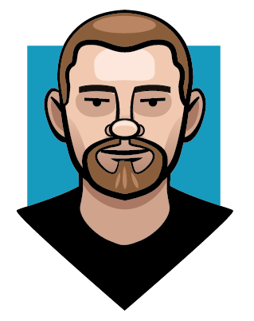
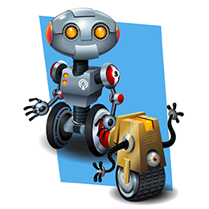
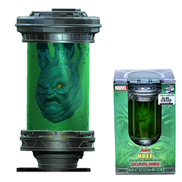
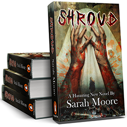
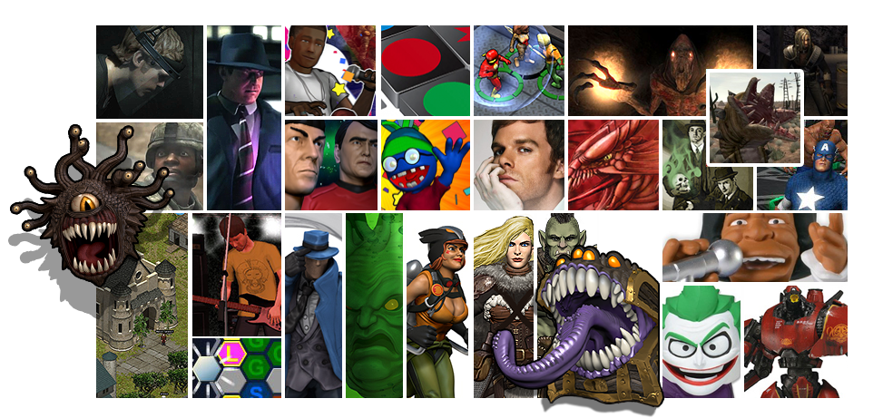
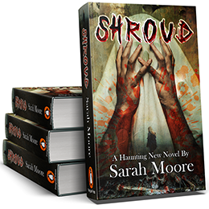
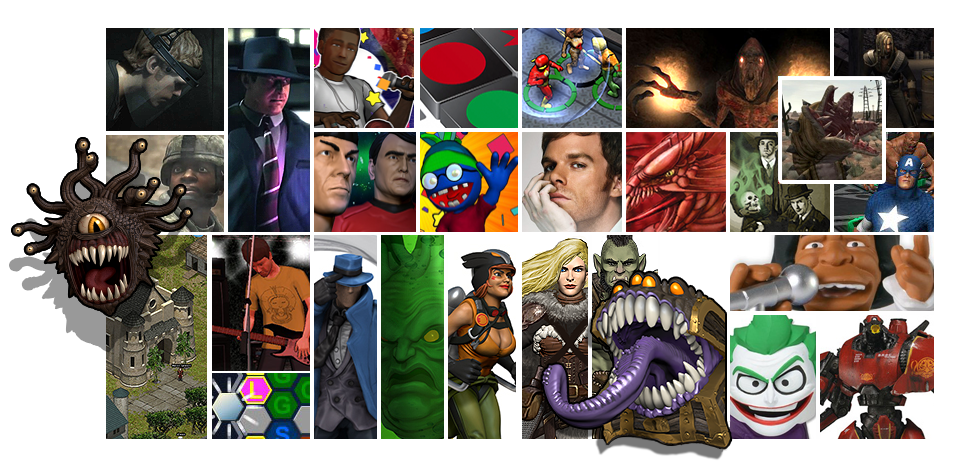

Frederick Rugar
Bio
Frederick Rugar has decades of experience designing and creating digital art for online & mobile experiences
and collectible consumer products. Over the years, Frederick has shipped over 20 online games in a variety
of genres and has overseen and directed the sculpting and production of over 7,000 collectible miniatures.
Bringing fresh ideas and a discerning eye to projects through his extensive experience in graphic design and
visual direction, as well as effective team leadership and project management, Frederick can motivate and
connect your staff, and produce art that will elevate your business to the next level.
Technical Skills
- Adobe Photoshop
- Adobe Illustrator
- Adobe InDesign
- Adobe XD
- Adobe After Effects
- Adobe Premere
- Adobe Animate
- Sketchup
- zBrush
- Blender
- Microsoft Office Suite
Hard Skills
- Storyboarding & Illustration
- Interactive Design
- Character Design
- Advertising & Promotions
- Packaging & POS Design
- Product Branding
- Typography
- Motion Graphics
- UI & UX Design
Soft Skills
- Creating Order from Chaos
- Knowing What is Important
- Finding the Funny
- Knowing When is the Time
- Being Picky about Details
- Playing Well with Others
- Waking up Positive
- Unwrapping Conundrums
- Laughing at Adversity
Contact, Social Media & Web
Work Samples


 


